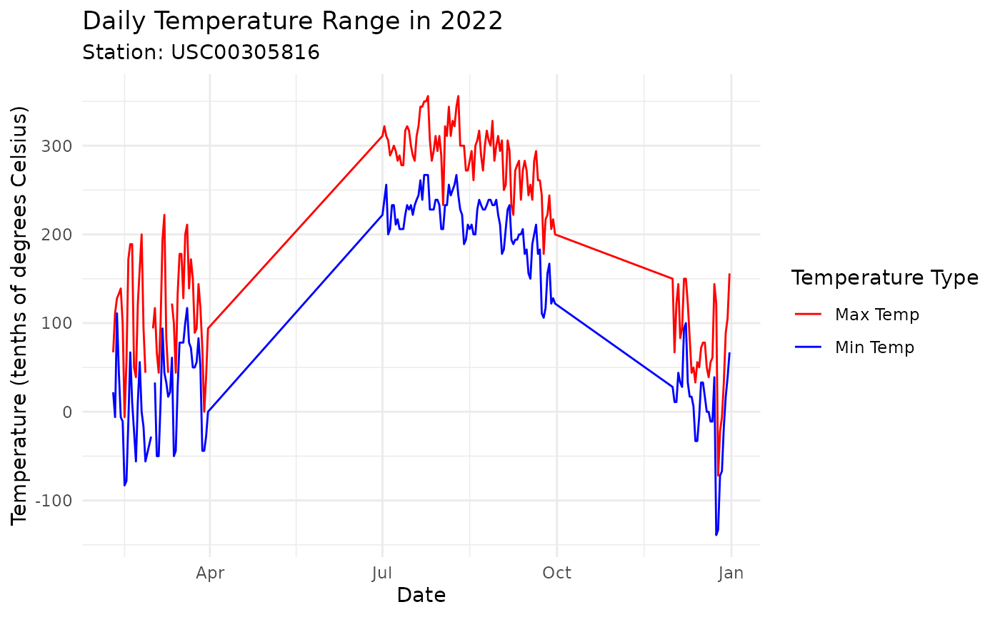
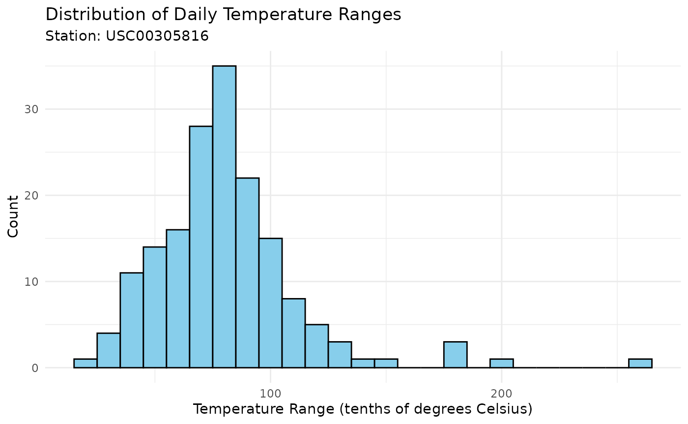
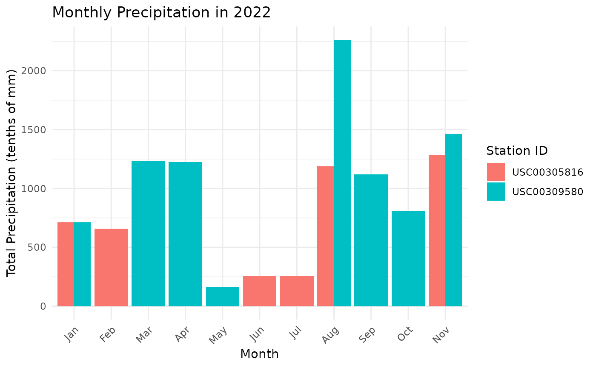

ghcn
ghcn.RmdIntroduction to GHCN-D and AWS
The Global Historical Climatology Network - Daily (GHCN-D) is a comprehensive database of daily climate summaries from land surface stations across the globe. This dataset is maintained by NOAA’s National Centers for Environmental Information (NCEI) and includes records from over 100,000 stations in 180 countries and territories.
The GHCN-D dataset is now available on Amazon Web Services (AWS) S3,
making it easier to access and analyze this valuable climate data. The
ghcn package provides tools to efficiently work with this
AWS-hosted dataset.
Comparing AWS Bucket vs NOAA NCEI API
While the GHCN-D data has traditionally been accessible through the NOAA NCEI API, the availability on AWS offers some distinct advantages. Let’s compare these two methods:
-
Data Freshness:
- NOAA NCEI API: Provides the most up-to-date data, including recent observations.
- AWS Bucket: Updated daily, but may have a slight lag compared to the API.
-
Access Speed:
- NOAA NCEI API: Can be slower, especially for large data requests, due to server-side processing.
- AWS Bucket: Generally faster, especially for bulk data access, as files are directly available.
-
Query Flexibility:
- NOAA NCEI API: Offers more flexible querying options, allowing for complex filters on the server-side.
- AWS Bucket: Requires client-side filtering, but the
ghcnpackage simplifies this process.
-
Data Format:
- NOAA NCEI API: Provides data in various formats, including CSV and JSON.
- AWS Bucket: Data is in CSV format, which the
ghcnpackage efficiently processes.
-
Usage Limits:
- NOAA NCEI API: Has rate limits and may require authentication for large requests.
- AWS Bucket: No rate limits for data access, but standard AWS data transfer costs may apply.
-
Ease of Bulk Data Access:
- NOAA NCEI API: Can be cumbersome for accessing large volumes of data.
- AWS Bucket: Excels at providing easy access to large datasets.
-
Integration with Cloud Computing:
- NOAA NCEI API: Requires data to be downloaded to local or cloud storage before processing.
- AWS Bucket: Allows for direct integration with AWS cloud computing services.
The ghcn package leverages the advantages of the
AWS-hosted dataset, providing fast and efficient access to GHCN-D data
without the need to worry about API rate limits or complex query
constructions. This makes it particularly suitable for large-scale data
analysis and research projects that require access to extensive
historical climate data.
While the NOAA NCEI API remains valuable for accessing the most
current data and for very specific queries, the AWS bucket approach used
by the ghcn package offers a streamlined experience for
most research and analysis needs, especially when working with
historical data at scale.
Installation
You can install the ghcn package using one of the
following methods:
Using remotes
The easiest way to install the package is using the
remotes package:
# install.packages("remotes")
remotes::install_github("joshbrinks/ghcn")Cloning the repository
If you want to clone the repository and install the package locally, follow these steps:
-
Clone the repository:
git clone https://github.com/joshbrinks/ghcn.git -
Open R or RStudio and set your working directory to the cloned repository:
setwd("path/to/ghcn") -
Install the package:
devtools::install()
Using the ghcn Package
The ghcn package offers three main functions to work
with the GHCN-D data on AWS:
-
find_stations_aws(): Find weather stations near a given location. -
get_inventory_aws(): Retrieve inventory information for specific stations. -
get_data_aws(): Fetch actual weather data for specified stations and time periods.
Let’s walk through how to use these functions together.
Finding Nearby Stations
First, let’s find weather stations near New York City:
nyc_stations <- find_stations_aws(lat = 40.7128, lon = -74.0060, radius = 50)
head(nyc_stations)## id latitude longitude elevation state
## <char> <num> <num> <num> <char>
## 1: USC00305816 40.7106 -74.0142 25.3 NY
## 2: USC00309580 40.7103 -74.0142 12.2 NY
## 3: US1NYNY0078 40.7339 -73.9844 6.1 NY
## 4: US1NYKN0025 40.6846 -73.9867 5.5 NY
## 5: US1NJHD0023 40.7326 -74.0510 30.2 NJ
## 6: USC00300958 40.6892 -73.9550 15.2 NY
## name gsn_flag hcn_crn_flag wmo_id geo_distance
## <char> <char> <char> <char> <num>
## 1: WORLD TRADE CTR 0.733160
## 2: WORLD TRADE CTR 0.744956
## 3: STUYVESANT SQUARE PARK - NEW Y 2.969520
## 4: BROOKLYN 3.1 NW 3.532681
## 5: JERSEY CITY 1.6 NNE 4.385017
## 6: BROOKLYN 5.036879This gives us a list of stations within a 50km radius of NYC, sorted by distance.
Getting Station Inventory
Now, let’s check what data is available for the first two stations:
station_ids <- nyc_stations$id[1:2]
inventory <- get_inventory_aws(station_ids)
head(inventory)## station_id element description
## <char> <char> <char>
## 1: USC00305816 AWND Average daily wind speed (tenths of meters per second)
## 2: USC00305816 PRCP Precipitation (tenths of mm)
## 3: USC00305816 SNOW Snowfall (mm)
## 4: USC00305816 SNWD Snow depth (mm)
## 5: USC00305816 TMAX Maximum temperature (tenths of degrees Celsius)
## 6: USC00305816 TMIN Minimum temperature (tenths of degrees Celsius)
## first_year last_year coverage_years completeness
## <int> <int> <num> <num>
## 1: 2022 2024 3 1
## 2: 1871 2024 154 1
## 3: 1884 2024 141 1
## 4: 1893 2024 132 1
## 5: 1871 2024 154 1
## 6: 1871 2024 154 1This inventory shows us what variables are available for each station and their period of record.
Fetching Weather Data
Let’s fetch temperature data for the first station for the year 2022:
station_data <- get_data_aws(
station_id = station_ids[1],
start_date = "2022-01-01",
end_date = "2022-12-31",
variables = c("TMAX", "TMIN")
)
head(station_data)## Key: <ID, DATE>
## ID DATE TMAX TMIN
## <char> <Date> <int> <int>
## 1: USC00305816 2022-02-09 67 22
## 2: USC00305816 2022-02-10 111 -6
## 3: USC00305816 2022-02-11 128 111
## 4: USC00305816 2022-02-12 133 44
## 5: USC00305816 2022-02-13 139 -6
## 6: USC00305816 2022-02-14 100 -11Demonstrating Functionality
Multiple Stations
We can fetch data for multiple stations at once:
multi_station_data <- get_data_aws(
station_id = station_ids,
start_date = "2022-01-01",
end_date = "2022-12-31",
variables = c("TMAX", "TMIN", "PRCP")
)
head(multi_station_data)## Key: <ID, DATE>
## ID DATE PRCP TMAX TMIN
## <char> <Date> <int> <int> <int>
## 1: USC00305816 2022-02-01 0 NA NA
## 2: USC00305816 2022-02-02 0 NA NA
## 3: USC00305816 2022-02-03 0 NA NA
## 4: USC00305816 2022-02-04 0 NA NA
## 5: USC00305816 2022-02-05 0 NA NA
## 6: USC00305816 2022-02-06 0 NA NALong Format Data
By default, get_data_aws() returns data in wide format.
We can get long format data by specifying the format
parameter:
long_data <- get_data_aws(
station_id = station_ids[1],
start_date = "2022-01-01",
end_date = "2022-12-31",
variables = c("TMAX", "TMIN", "PRCP"),
format = "long"
)
head(long_data)## ID DATE ELEMENT DATA_VALUE M_FLAG Q_FLAG S_FLAG OBS_TIME
## <char> <Date> <char> <int> <char> <char> <char> <int>
## 1: USC00305816 2022-02-01 PRCP 0 7 NA
## 2: USC00305816 2022-02-02 PRCP 0 7 NA
## 3: USC00305816 2022-02-03 PRCP 0 7 NA
## 4: USC00305816 2022-02-04 PRCP 0 7 NA
## 5: USC00305816 2022-02-05 PRCP 0 7 NA
## 6: USC00305816 2022-02-06 PRCP 0 7 NAData Visualization and Analysis
Let’s visualize the temperature data for one station using ggplot2:
ggplot(station_data, aes(x = DATE)) +
geom_line(aes(y = TMAX, color = "Max Temp")) +
geom_line(aes(y = TMIN, color = "Min Temp")) +
scale_color_manual(values = c("Max Temp" = "red", "Min Temp" = "blue")) +
labs(title = "Daily Temperature Range in 2022",
subtitle = paste("Station:", station_ids[1]),
x = "Date", y = "Temperature (tenths of degrees Celsius)",
color = "Temperature Type") +
theme_minimal()
We can also look at the distribution of daily temperature ranges:
station_data[, temp_range := TMAX - TMIN]
ggplot(station_data, aes(x = temp_range)) +
geom_histogram(binwidth = 10, fill = "skyblue", color = "black") +
labs(title = "Distribution of Daily Temperature Ranges",
subtitle = paste("Station:", station_ids[1]),
x = "Temperature Range (tenths of degrees Celsius)",
y = "Count") +
theme_minimal()## Warning: Removed 3 rows containing non-finite outside the scale range
## (`stat_bin()`).
Let’s analyze precipitation patterns:
multi_station_data[, month := month(DATE)]
monthly_precip <- multi_station_data[, .(total_precip = sum(PRCP, na.rm = TRUE)),
by = .(ID, month)]
ggplot(monthly_precip, aes(x = factor(month), y = total_precip, fill = ID)) +
geom_bar(stat = "identity", position = "dodge") +
scale_x_discrete(labels = month.abb) +
labs(title = "Monthly Precipitation in 2022",
x = "Month", y = "Total Precipitation (tenths of mm)",
fill = "Station ID") +
theme_minimal() +
theme(axis.text.x = element_text(angle = 45, hjust = 1))
Conclusion
The ghcn package provides powerful tools for accessing
and analyzing GHCN-D data from AWS. By combining these functions with
data manipulation and visualization libraries like data.table and
ggplot2, you can easily explore climate patterns and trends.
Remember to cite the GHCN-D dataset in your work:
Menne, M.J., I. Durre, B. Korzeniewski, S. McNeal, K. Thomas, X. Yin, S. Anthony, R. Ray, R.S. Vose, B.E.Gleason, and T.G. Houston, 2012: Global Historical Climatology Network - Daily (GHCN-Daily), Version 3. [indicate subset used following decimal, e.g. Version 3.12]. NOAA National Climatic Data Center. http://doi.org/10.7289/V5D21VHZ [access date].